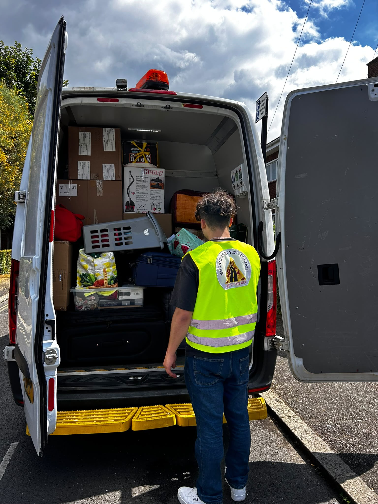
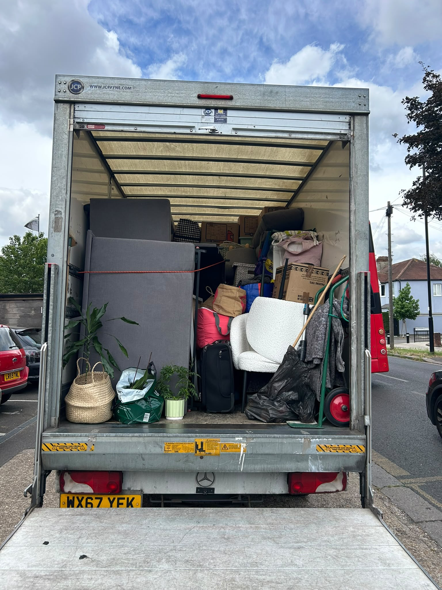

Removals Sutton SM1 SM2 SM3
Professional removals Sutton from a team based next door in Morden SM4 — immediately adjacent to the Sutton borough and closer than most companies serving the area. 125 five-star Google reviews. Instant quote in 60 seconds.
Sutton SM1 SM2 SM3: Neighbourhoods We Know
SM1 Sutton town centre mixes Victorian and Edwardian terraces on the periphery — Benhill Wood Road, Granville Road and similar streets — with purpose-built flats near Sutton station and along Carshalton Road. A high rental population means frequent end-of-tenancy moves where speed and clear pricing matter. Rose Hill, The Wrythe and Benhilton offer more affordable terraced housing well suited to man and van service.
SM2 Cheam and Belmont is the most sought-after part of the borough. Cheam Village retains historic character with timber-framed buildings and a popular high street. Large 1930s semi-detached and detached family homes sit throughout SM2, with average semis reaching around £597k. Families who moved here for schools and green space — Nonsuch Park, Cheam Park — tend to move carefully within the area. Belmont has a similarly village-like feel with strong owner-occupier character.

SM3 Cheam Common and Stonecot Hill bring mid-range family housing and quieter semi-detached streets. Worcester Park borders this area, and moves between SM3 and South West London are common — including households from Balham, Tooting, Colliers Wood or Morden.
Carshalton sits between SM1 and SM5 on traditional suburban semi-detached streets. Carshalton Ponds is one of the area’s most distinctive landmarks, with a strong family orientation.
Modern Section 106 permit-free developments along the A232 Carshalton Road and near Sutton station are newer apartments where residents cannot purchase on-street parking permits or visitor scratchcards. Check your tenancy agreement or lease before move day and plan your loading approach accordingly.
We recently helped a returning customer relocate to Wallington SM6 — trust built over multiple moves across the full Sutton borough. Renters near the town centre often need fast end-of-tenancy service with clear instant pricing; families in Cheam and Belmont need careful handling between larger homes; first-time buyers from Balham, Tooting, Colliers Wood, Morden, Wimbledon SW19 or Raynes Park SW20 often already know our work. Mitcham borders Sutton to the east; our Morden-based team covers linked moves across the SM and SW cluster — see also South West London removals.
Whether you are leaving an SM1 flat, settling into a Cheam family home or arriving from Wandsworth, we plan the carry sequence around your specific property.

Why Choose Us for Removals in Sutton
We are based in Morden SM4 — immediately next to the Sutton borough — for a faster response and stronger SM postcode knowledge than companies travelling from further across London. Our 125 five-star Google reviews make us one of the most reviewed removal companies serving Sutton and South West London. We are family-run and fully insured, with a bilingual English and Spanish team. Our instant online quote calculator gives a 2-hour estimate in around 60 seconds — no phone calls needed. Same-day availability when slots allow.
Based in Morden SM4 — next door to the Sutton borough
125 five-star Google reviews across South West London
Family-run, fully insured, bilingual English and Spanish
Instant quote calculator and same-day availability when slots allow
Our Services Across Sutton SM1 SM2 SM3
House & Flat Removals in Sutton
House removals Sutton and flat removals Sutton cover SM1, SM2 and SM3 — from Victorian terraces near the town centre to large family homes in Cheam and Belmont.
Man and Van Sutton
Man and van Sutton suits smaller moves, single-room relocations or end-of-tenancy moves in SM1 where a smaller vehicle works better in tight terraced streets.
Packing & Unpacking Services
Packing and unpacking reduce move-day stress, particularly for Cheam SM2 family homes with larger volumes needing methodical protection and logical labelling.
Furniture Disassembly & Assembly
Furniture disassembly and assembly is essential for Victorian terraces with narrow stairwells where beds and wardrobes need stripping before being moved. Fixings are labelled and bagged throughout.
End of Tenancy Cleaning
End of tenancy cleaning is an optional add-on through the same booking — useful for SM1 renters facing landlord deposit inspections. See our services page for full scope.
Parking and Access Planning in Sutton
Sutton’s parking zones vary significantly street by street across SM1 SM2 and SM3. Knowing which zone applies to your property before move day helps you plan ahead and avoid delays or fines.
Sutton Town Centre CPZ around the high street and Sutton station operates Monday to Saturday 8:00am to 6:30pm. Shared-use resident bays are mixed with Pay-and-Display and RingGo. Enforcement is high — check the specific bay markings outside your address before move day.
The SS zone (South Sutton) covers residential corridors off Brighton Road, Monday to Friday 9:00am to 11:00am only. The AW zone (Aultone Way) north of the town centre near the St Helier border operates Monday to Friday 8:00am to 6:30pm. The CB zone (Gordon Road) covers pockets near the railway line Monday to Friday 10:00am to 12:00pm only.
Collingwood Estate CPZ operates Monday to Saturday 9:00am to 7:30pm with its own rules — standard Sutton Council permits are invalid here. If you live on the Collingwood Estate, check with your housing management before move day about parking arrangements.
On bank holidays, parking charges and CPZ resident restrictions are generally suspended across Sutton, except on 24/7 double yellow lines and dedicated emergency bays.
If you need to reserve a space for a removal van on a restricted street, you will need to apply to Sutton Council for a formal parking bay suspension. Domestic house removals in Sutton are exempt from the standard £112 administration fee and £40 per bay per day charge that applies to commercial works — free for house moves, but you must apply at least 7 working days in advance so the council can erect physical suspension signs. Apply through Sutton Council’s highways and transport team at sutton.gov.uk.
If you do not apply for a suspension, you can load from a single yellow line for a maximum of 40 minutes. Enforcement officers operate an observed activity rule — if the vehicle is unattended for more than 5 consecutive minutes, a Penalty Charge Notice will be issued immediately. Always check for kerb blips — vertical yellow markings on the kerbstone indicate an absolute loading ban during displayed hours, which overrides the standard loading exemption.
Section 106 permit-free developments along the A232 Carshalton Road and near Sutton station often mean you will not be able to purchase on-street resident permits or visitor scratchcards. Check your tenancy agreement or lease before move day and plan your loading approach accordingly.
School streets at Cheam Fields Primary Academy on Stoughton Avenue and Cheam Park Farm Primary Academy on Kingston Avenue operate with ANPR enforcement during term time — 8:15am to 9:00am and 2:45pm to 3:45pm Monday to Friday; Cheam Park Farm’s morning window closes at 8:50am. There are no exemptions for removal vans — plan your arrival time outside these windows. For off-street parking, Gibson Road Car Park and St Nicholas Way Car Park are the main town centre multi-storey facilities.
Sutton Moving FAQ
Our instant quote calculator gives you a starting estimate in around 60 seconds. Enter your pickup and dropoff addresses, the number of assistants you need and your preferred move time. The calculator generates a 2 hour minimum estimate based on your details. Please note that the final cost of your move depends on the total hours taken from when loading starts to when unloading finishes — the 2 hour estimate is a starting point not a fixed price. For moves involving multiple floors, large volumes or tight access in SM1 terraced streets it is worth building in extra time when planning your budget.
Is parking free for house removals in Sutton?
Domestic house removals in Sutton are exempt from the standard parking bay suspension fees — there is no administration fee and no daily charge per bay for house moves. You still need to apply at least 7 working days in advance through Sutton Council’s highways team to allow time for physical suspension signs to be erected. Check sutton.gov.uk for the current application process.
What if my property is in a Section 106 permit-free development near Sutton station?
Permit-free properties cannot use on-street resident permits or visitor scratchcards during CPZ hours. Check your tenancy agreement or lease before move day to confirm whether this applies to your building. Planning your loading approach in advance — whether through a bay suspension or an alternative parking arrangement on an adjacent street — avoids problems on the day.
Do you serve Cheam, Carshalton, Belmont and Wallington as well as Sutton town centre?
Yes — we cover the full Sutton borough across SM1 SM2 and SM3 including Cheam Village, Carshalton, Belmont, Rose Hill, Sutton Common and Wallington SM6. Being based in Morden SM4 puts us immediately next to the borough.
How does the instant quote calculator work?
Enter your pickup and dropoff addresses, the number of assistants you need and your preferred move time. You will receive a 2 hour minimum estimate in around 60 seconds. The final cost depends on the total hours taken from when loading starts to when unloading finishes. For Sutton moves involving tight terraced streets or multiple floors we recommend building some buffer time into your estimate.
Ready to plan your Sutton move?
Enter your addresses for a clear 2-hour starting estimate.
Get your Sutton removal quote in 60 seconds | Speak with the team